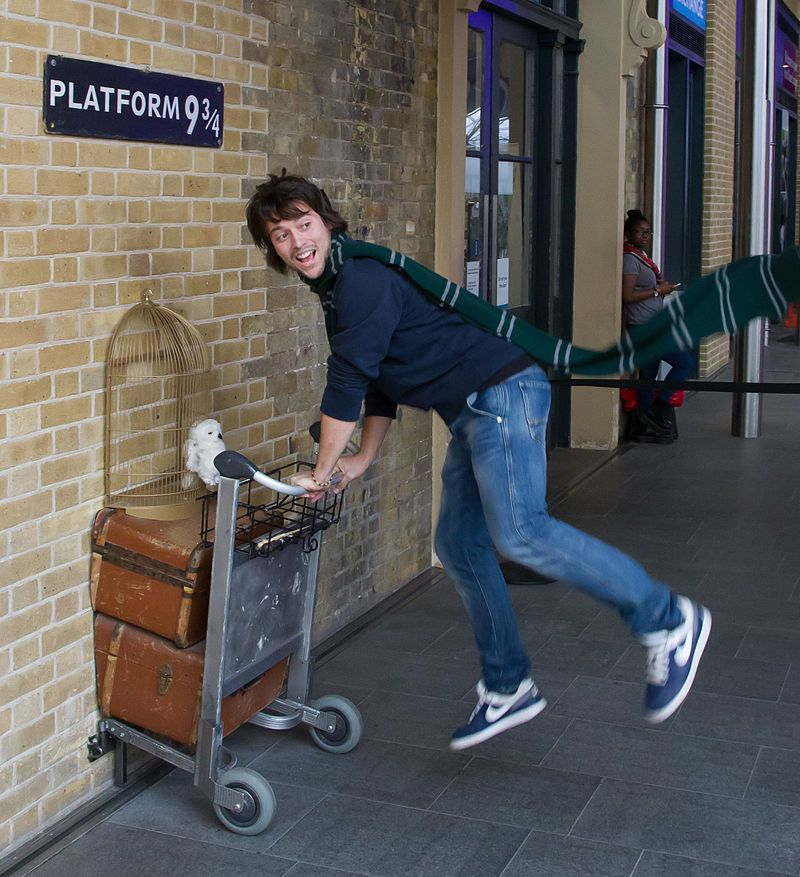

Chiara Potter
L'aventurière de la voie 9 3/4
L'impatience d'une guerrière OU comment se brûler les ailes en s'approchant trop du soleil
Chiara était une jeune fille enjouée et ambitieuse. Elle voulait à tout prix rejoindre l'école des sorciers de l'autre côté du mur tant connu. Pourtant, tout ne se passa comme prévu ...
Elle avait décidé de forcer le destin, et sans avoir reçu sa lettre, s'est enquit de rejoindre la gare de King's Cross
Galvanisée par le désir de maitriser la baguette, elle enfaucha son Nimbus 2000 et tenta de passer au travers des briques